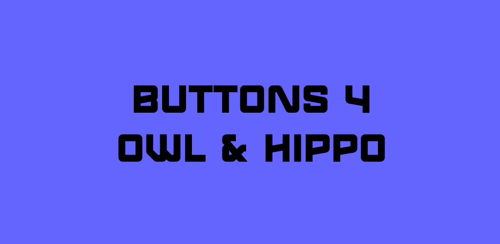
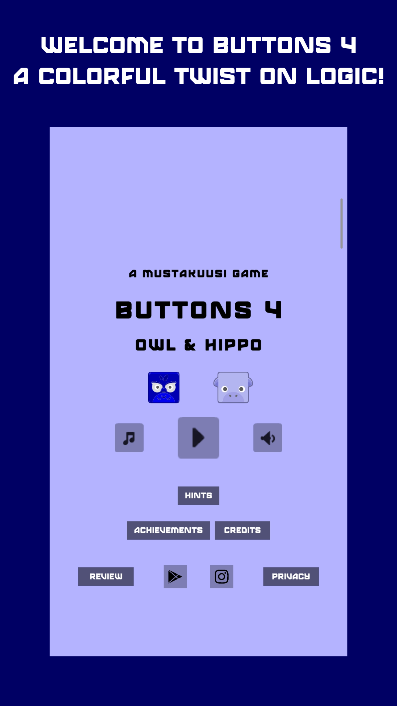
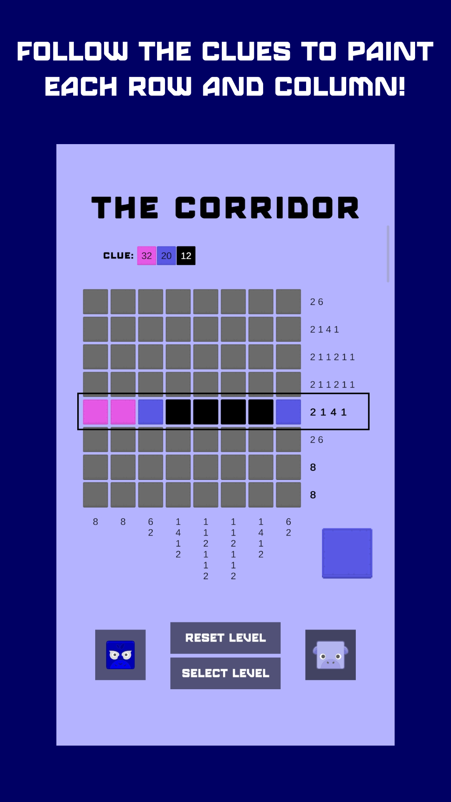
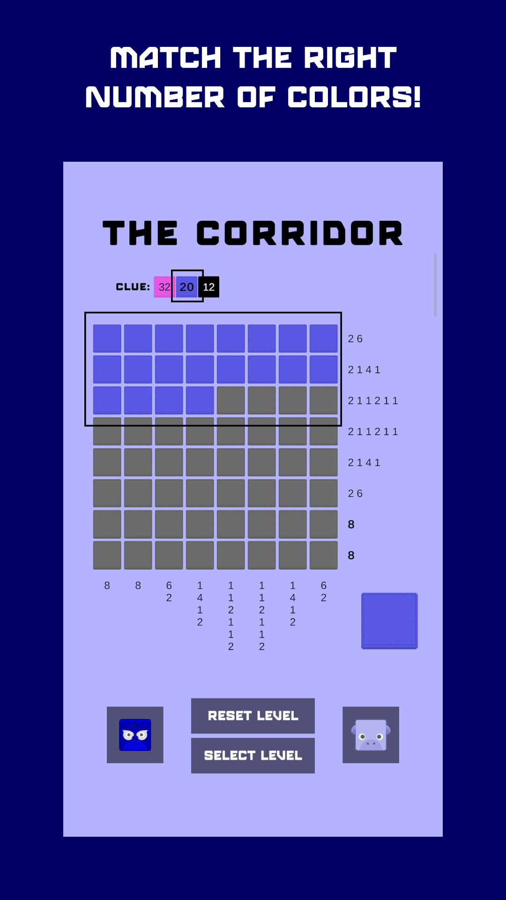
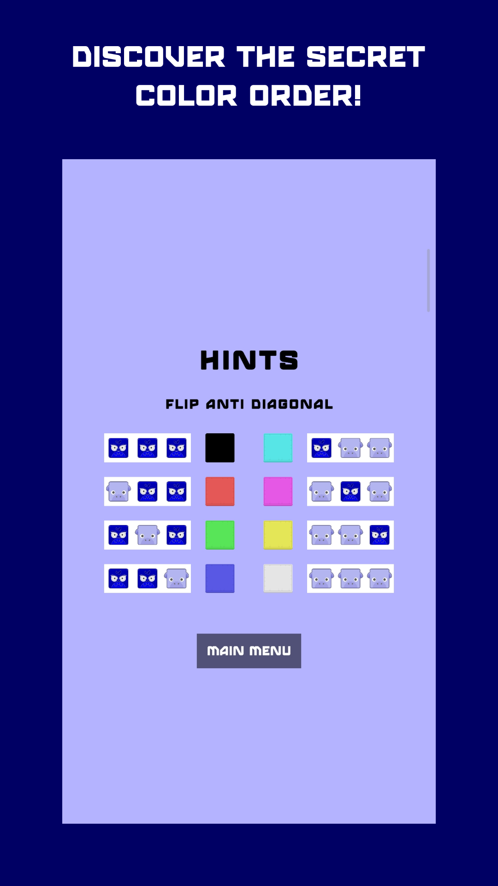

Buttons 4

🧩 Buttons 4: Owl & Hippo — Color Nonogram Logic Puzzle
Buttons 4: Owl & Hippo is a color nonogram word puzzle where every level hides a secret color grid. Use simple logic and just two buttons — Owl and Hippo — to solve each colorful mystery.
Each stage gives you numeric color clues, just like a nonogram, but with a minimalist twist. Tap the right Duck and Penguin sequence to fill the grid and reveal the hidden color pattern!
🎮 Game Features:
- 🌈 Unique Color Nonogram Gameplay — Solve puzzles using numeric color clues and logic.
- 🐾 Two-Button Controls — Use Owl and Hippo buttons to build your color combo.
- 🔢 Smart Color Logic — Each number shows how many of each color appear in the grid.
- 🎯 Instant Feedback — Watch the grid update in real time as you input each sequence.
- 🧠 Brain-Training Fun — Simple to play, challenging to master logic puzzles.
- 🎨 Minimalist Art Style — Clean visuals and vibrant color reveals.
- 🏆 Achievement System — Unlock achievements as you solve puzzles and improve your logic skills.
- 📴 Offline Play — Enjoy anywhere, anytime without internet access.
Whether you love nonograms, color puzzles, or brain training games, Buttons 4: Owl & Hippo offers a fresh twist with just two buttons and endless colorful combinations.




📄 Read our full Privacy Policy